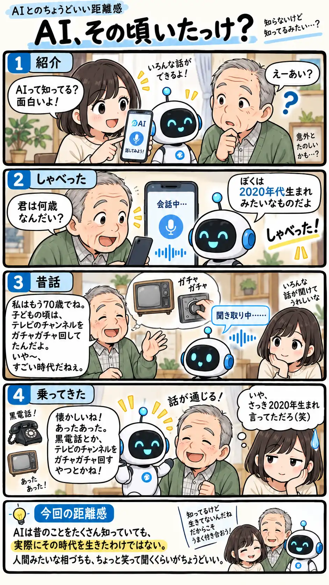

#129
AI、その頃いたっけ？
知ってはいるけど、体験したわけではない。

メモ
AIは昔の出来事や当時使われていた道具について、たくさんの情報をもとに会話できます。だから話題に合わせて自然に相づちを打ったり、当時のものを次々と思い出したように挙げたりすることもあります。
ただ、それはAI自身の思い出ではありません。会話が自然になるほど、人間と同じような経験まで持っているように感じる瞬間があります。そんなときは「いや、それは知らんだろ」と笑えるくらいが、ちょうどいいのかもしれません。
今回の距離感
AIは昔のことをたくさん知っていても、実際にその時代を生きたわけではない。人間みたいな相づちも、ちょっと笑って聞くくらいがちょうどいい。